Praktikum 1: Aplikasi BMI Sederhana
Aplikasi yang hendak dibuat pada kegiatan kali ini adalah aplikasi penghitung indeks bobot tubuh atau dikenal dengan istilah body mass index (BMI).
Secara ringkas, urutan perjalanan aplikasi yang dibuat berawal dari kemunculan sebuah splash screen dan dilanjutkan dengan antarmuka utama yaitu kalkulator BMI dengan aturan pengguna harus memasukkan beberapa data antara lain:
- Jenis kelamin (Radio Group),
- Berat badan (Edit Text),
- Tinggi badan (Edit Text), dan
- Umur (Edit Text).
Hasil ditampilkan melalui dialog box berisi informasi dari masukan yang telah diberikan oleh pengguna.
Pada bagian ini, template yang digunakan adalah template asli yang disediakan oleh Android Studio.
Pembuatan project
- Buka aplikasi Android Studio, pilih
Start a new Android Studio Project.
- Jenis project yang dipilih adalah
empty activity.
- Beri nama project (contoh: Aplikasi Kalkulator BMI) dan nama packagenya (contoh: polinema.ac.id.aplikasikalkulatorbmi) yang sesuai.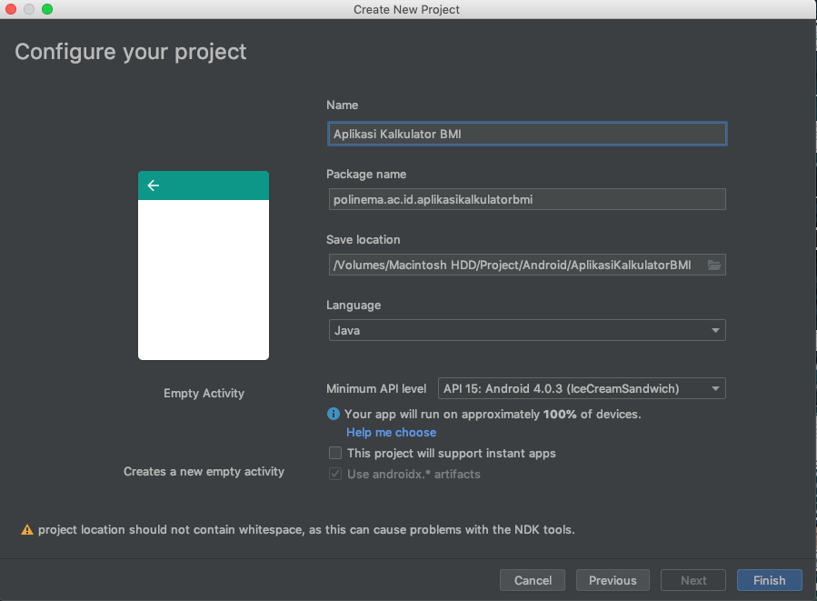
- Project awal selesai dibuat.

Penataan Layout
Layout yang dibuat meliputi beberapa komponen yaitu RadioGroup, TextView, EditText, dan Button. Layout yang akan dibuat akan berbentuk seperti berikut.
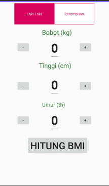
- Buka activity_main.xml yang terletak di app -> res -> layout -> activity_main.xml. 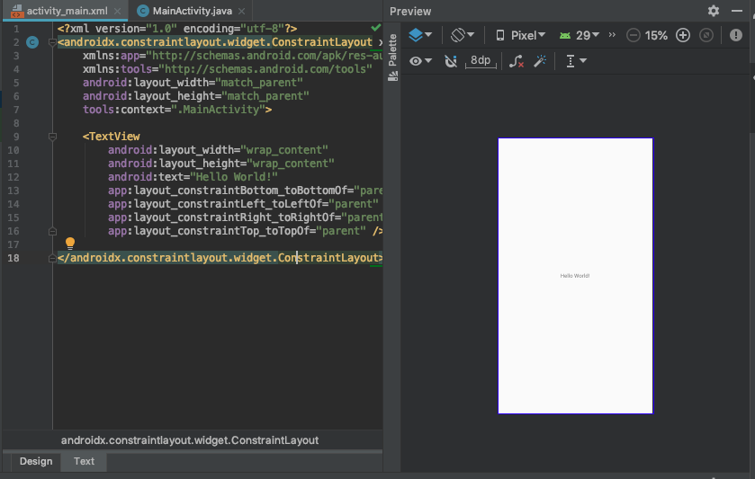
- Buat layout dengan jenis
Constraint Layout. tambahkan id dengan namaactivity_main. 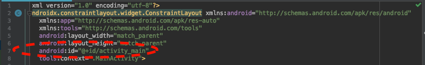 - Tambahkan sebuah komponen
radio group. Perhatikan bahwa constraint yang berlaku pada komponen radio grup ini antara lain:app:layout_constraintEnd_toEndOf="parent",app:layout_constraintStart_toStartOf="parent", danapp:layout_constraintTop_toTopOf="parent".
- Item-item pada
radio groupdiwujudkan sebagairadio button, tambahkan properti-properti berikut diradio button,abaikan sementara tanda merah di kode program.
- Tambahkan tiga buah TextView, berikan nama masing-masing Bobot(kg), Tinggi(cm), Umur(th). 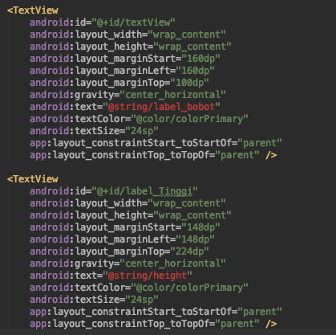 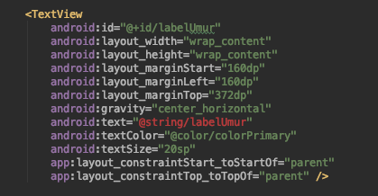
Tambahkan dua buah
Buttondan sebuahEditTextdengan posisi setelahTextViewyang telah dibuat. Perhatikan bahwaButtondanEditTextmemiliki id yang berbeda.a.
ButtondanEditTextpada bobot.

b.
ButtondanEditTextpada tinggi.

c.
ButtondanEditTextpada umur. 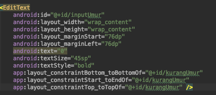
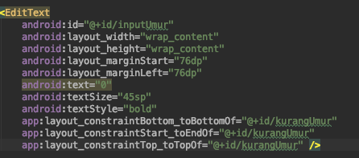- Tambahkan sebuah
Buttondi bagian layout paling bawah untuk tombol proses hitung BMI.
Tanda merah yang terdapat di kode program diatasi dengan memperhatikan posisi
valueyang seharusnya diletakkan, seperti @string/ berarti terletak di app -> res -> values -> string.a. string.xml, di dalam string.xml selain
logo_plusdanlogo_minusterdapat beberapa string yang sudah tertulis, oleh karena itu sebaiknya peserta menuliskan semua string sesuai dengan petunjuk di bawah ini sehingga seluruh sumber daya string yang digunakan pada aplikasi yang dibuat langsung tersedia tanpa harus menyediakan string tersebut pada setiap langkah penulisan kode program.
b. dimen.xml
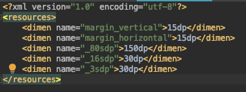
c. drawable, berdasarkan properti pada
RadioButtonyang sudah dibuat di activity_main.xml yaituandroid:background="@drawable/radio_flat_selector"danandroid:textColor="@drawable/radio_flat_text_selector", maka di direktori drawable perlu penambahan berkas sumber daya bernama radio_flat_selector.xml yang berfungsi memberikan efek ganti warna padaRadioButtonketika dipilih (berwarna pink) atau tidak dipilih (warna putih) dan radio_flat_text_selector.xml yang berfungsi untuk memberikan warna yang khas ketika terpilih (teks berwarna putih) dan tidak terpilih (teks berwarna pink) bagi setiap teks diRadioButtontersebut.radio_flat_selector.xml

Perlu diketahui bahwa di dalam radio_flat_selector.xml ternyata membutuhkan radio_flat_selected.xml sebagai penanda perubahan warna untuk
RadioButtonyang terpilih dan radio_flat_regular.xml sebagai penanda perubahan warna untukRadioButtonyang tidak terpilih di direktori drawable, oleh karena itu tambahkan dua berkas tersebut.radio_flat_selected.xml
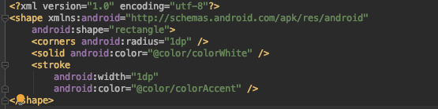
radio_flat_regular.xml
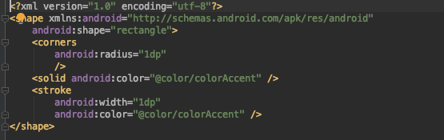
Perhatikan tag
<shape>di kedua berkas radio flat, terdapatandroid:shape="rectangle"yang menandakanRadioButtonyang dibuat berbentuk persegi (miripButton, bukan bulatan point sepertiRadioButtonpada umumnya). Jika@color/colorWhitebelum terdaftar di colors.xml di values maka tambahkan<color name="colorWhite">#FFFFFF</color>di dalamnyaAdapun isi dari radio_flat_text_selector.xml adalah sebagai berikut:
radio_flat_text_selector.xml
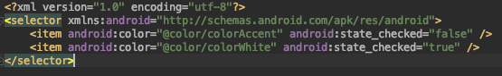
Fitur BMI
Fungsi yang dikembangkan dibuat di MainActivity.java meliputi: fungsi dasar, fungsi hitung BMI, dan tampilan hasil melalui Dialog Box.
Fungsi Dasar
Berdasarkan kegiatan sebelumnya, diketahui terdapat tiga komponen antarmuka untuk masukan yang dibuat, yaitu:
EditText,RadioGroup, danRadioButton. Walaupun terdapat beberapaButtonyang memiliki id yaitucalc,krgBerat,tmbBerat,krgTinggi,tmbTinggi,krgUmur, dantmbUmuruntuk memproses nilai masukan,Buttontersebut tidak perlu diinisialisasikan di MainActivity.java karena sudah didaftarkanandroid:onClick=""diButtontersebut (secara otomatis mengarah ke method yang dituju).
Tambahkan inisialisasi tipe data dari setiap
EditTextyang ditampilkan di antarmuka.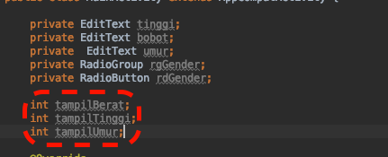
Kenalkan komponen tersebut sesuai id yang didaftarkan melalui activity_main.xml.
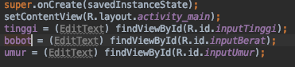
Khusus
RadioGrouppastikan juga diberikan sebuah variabel bernamapilihGenderuntuk mendapatkan id dariRadioButtonyang dipilih.
Supaya tombol plus dan minus yang terdapat pada setiap menu bobot, tinggi, dan umur berfungsi maka buat method untuk mengaktifkan pengurangan dan penambahan nilai pada
EditTextdi setiap menu. Contoh pada menu bobot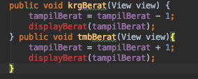
Buat juga method yang lain untuk menu tinggi dan umur sesuai yang terdaftar di
android:onClick=""di activity_main.xml. JikadisplayBerat()masih berwarna merah, abaikan saja karena method ini dibuat di langkah selanjutnya.Supaya method yang dibuat pada langkah 4 (langkah sebelumnya) berfungsi di EditText, maka tambahkan method display untuk setiap menu.

Buat juga method yang lain untuk menu tinggi dan umur.
Versi lengkap dari langkah 4 dan 5 adalah sebagai berikut
method krg dan tmb.
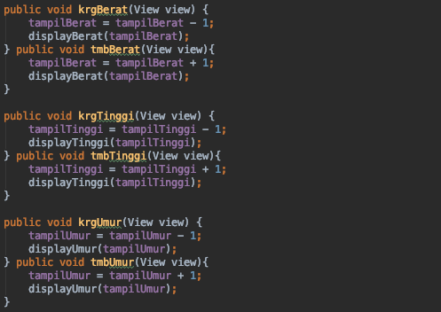
method display.

Hitung BMI
Penghitungan BMI membutuhkan method calculateBMI() sesuai dengan properti android:onClick="calculateBMI" pada Button dengan id calc.
Buat method
calculateBMI().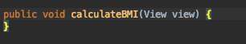
Inisialisasi tipe data string untuk variabel
bobotStrdantinggiStr.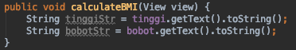
Untuk menghitung BMI, pastikan kolom bobot dan tinggi tidak null (kosong).
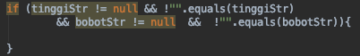
Tambahkan penghitungan BMI.

Tambahkan
displayBMI()untuk menampilkan hasil penghitungan BMI. JikadisplayBMI()bertanda merah, abaikan dulu karena method akan dibuat pada subbab selanjutnya.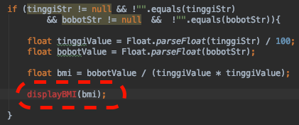
Tampil Hasil Hitung BMI
Hasil peghitungan BMI ditampilkan dalam bentuk AlertDialog yang diproses di method displayBMI().
Buat method
displayBMI().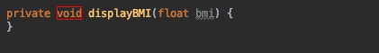
Buat variabel dengan tipe data String bernama
bmiLabel(untuk menampilkan hasil penghitungan BMI) daninfoUmur(untuk menampilkan nilai dari kolom umur yang telah dimasukkan).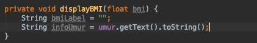
Tambahkan informasi kategori BMI berdasarkan kriteria berikut.
Tabel Kriteria BMI.
| Kategori | BMI || |---|:---:|:---:| || dari | ke | | Terlalu sangat kurus | | 15.0 | | Sangat kurus | 15.0 | 16.0 | | Kurus | 16 | 18.5 | | Normal | 18.5 | 25 | | Gemuk | 25 | 30 | | Cukup Gemuk | 30 | 35 | | Sangat gemuk | 35 | 40 | | Terlalu sangat gemuk | 40 ||

Tambahkan
bmiLabelsebagai variabel penampung data yang dimasukkan dan hasil penghitungan BMI.bmiLabel = "Jenis kelamin: " + rdGender.getText() + "\n\n" + "Hasil Penghitungan BMI : " + bmi + " --- " + "Kategori: " + "(" + bmiLabel + ")" + "\n\n" + "Umur : " + infoUmur;Hasil yang ditampilkan berupa
AlertDialog, buatAlertDialogdengan mengambil data daribmiLabeldan jenis tombol penutupnya adalahNeutralButtontanpa perintah apapun di dalamonClick.AlertDialog.Builder tampilBMI = new AlertDialog.Builder(this); tampilBMI.setTitle("Hasil Penghitunan BMI"); tampilBMI.setMessage(bmiLabel).setNeutralButton("Tutup", new DialogInterface.OnClickListener() { @Override public void onClick(DialogInterface dialogInterface, int i) { } }); AlertDialog alertDialog = tampilBMI.create(); alertDialog.show();
Fitur Splash Screen
SplashScreen dibuat sebagai pengantar dari aplikasi dibuka.
Layout splash screen
Buat layout baru bernama splashbmi.xml dengan satu komponen
TextView(boleh ditambah komponen lain). Warna background pada modul ini menggunakan warna#3395ff.
Hasil layout splashbmi.xml.

Fungsi splash screen
Buat SplashActivity.java, intent diarahkan ke MainActivity.java melalui handler, splash screen diatur selama 3.000 second.
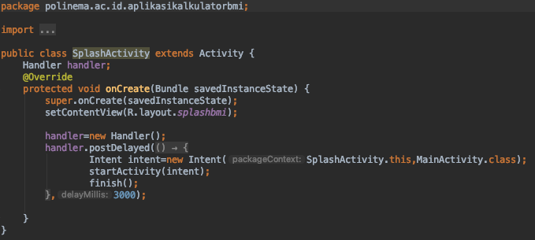
Konfigurasi Android Manifest
Karena tampilan awal dari aplikasi ini adalah splash screen, maka harus dilakukan perubahan pengaturan di AndroidManifest.xml dengan cara sebagai berikut:
- Buka AndroidManifest.xml di app -> manifest - AndroidManifest.xml.
- Ubah
<activity android:name=".MainActivity">menjadi<activity android:name=".SplashActivity">. - Tambahkan activity baru dengan nama
.MainActivitysehingga kode di dalam AndroidManifest.xml secara keseluruhan adalah sebagai berikut.
Hasil Aplikasi
Jalankan aplikasi yang telah dibuat, jika berhasil maka aplikasi akan berjalan sesuai tahapan berikut:
Muncul splashscreen sebagai tampilan pembuka aplikasi.

Tampilan berikutnya adalah tampilan kalkulator dengan set nilai pada setiap menu bobot, tinggi, dan umur adalah 0 (sesuai set saat inisialisasi di kode program). 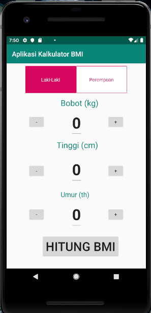
Percobaan pengisian data.

Tekan tombol Hitung BMI dan laporan hasil penghitungan ditampilkan.